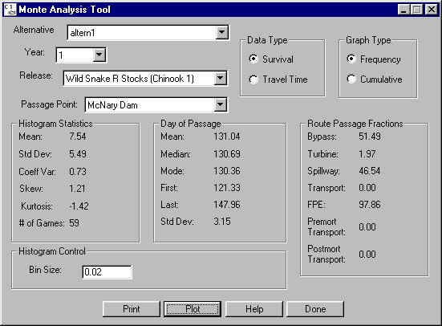

Monte Analysis: Monte Analysis Tool
Selecting Analysis Monte Analysis opens the Monte Analysis Tool and its companion window the Analysis Tool graph window. Using these windows, you can visually examine the results of a Monte Carlo run. You can plot either the survival or travel time results as a straight frequency histogram or as a cumulative probability histogram.
Monte Analysis opens the Monte Analysis Tool and its companion window the Analysis Tool graph window. Using these windows, you can visually examine the results of a Monte Carlo run. You can plot either the survival or travel time results as a straight frequency histogram or as a cumulative probability histogram.
Monte Analysis Tool features
- Alternative: Select an Alternative from the list of possible alternatives in the COMPASS home directory (the directory from which COMPASS was started).
- Year: Select Year for the alternative.
- Release: Select Release for the alternative.
- Passage Point: Select Passage Point for the alternative.
- Data Type: Select Survival or Travel Time.
- Graph Type: Select Frequency or Cumulative.
- Histogram Statistics
- Mean, Std Dev, Coeff Var, Skew, Kurtosis: Statistics for survival or travel time depending on the Data Type selection.
- # of Games: Number of games completed in the selected alternative.
- Day of Passage
- Mean, Median, Mode, Std Dev: Passage statistics for the release at the passage point.
- First: First day of passage for the release at the passage point.
- Last: Last day of passage for the release at the passage point.
- Route Passage Fractions
- Bypass: Percent of the release that survived that passed the dam through the bypass.
- Turbine: Percent of the release that survived that passed the dam through the turbine.
- Spillway: Percent of the release that survived that passed the dam through the spillway.
- Transport: Percent of the release that survived the entire transportation process from the dam to the release site.
- FPE: Fish passage efficiency.
- Premort Transport: Number of fish in the release which were captured for transport.
- Postmort Transport: Number of fish in the release which survived transport to the release point.
- Histogram Control
- Bin Size: set the size of each bin for survival histogram. In the example, the bin size is set to .02 (2%) for the survival histogram. The X-axis range is from 0 to 1 (0 to 100%). Each bar in the histogram represents 2%. With the bin size set to 2%, the games of the alternative are divided into 50 bins. The histogram represents what percent of the games (Y-axis) in the alternative fell within each 2% range. For travel time, the Bin Size entry field has been deactivated; the bin size is set to 1.
- Print: Opens the Output Window with the survival or travel time statistics. Use the functions of the Output Window to print the information or save it to a file.
- Plot: Calculates survival or travel time statistics and draws graph in the Analysis Tool graph window based on the selections made.
- Help: Opens context-sensitive help window.
- Done: Closes Monte Analysis Tool window.

Monte Analysis Tool